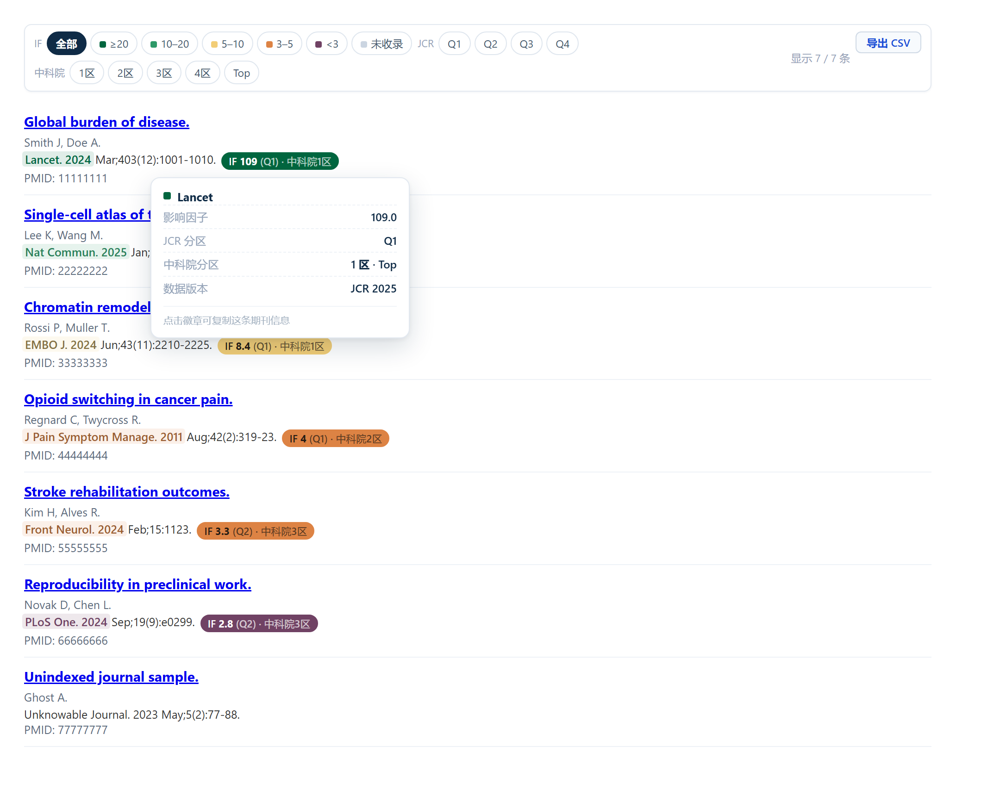
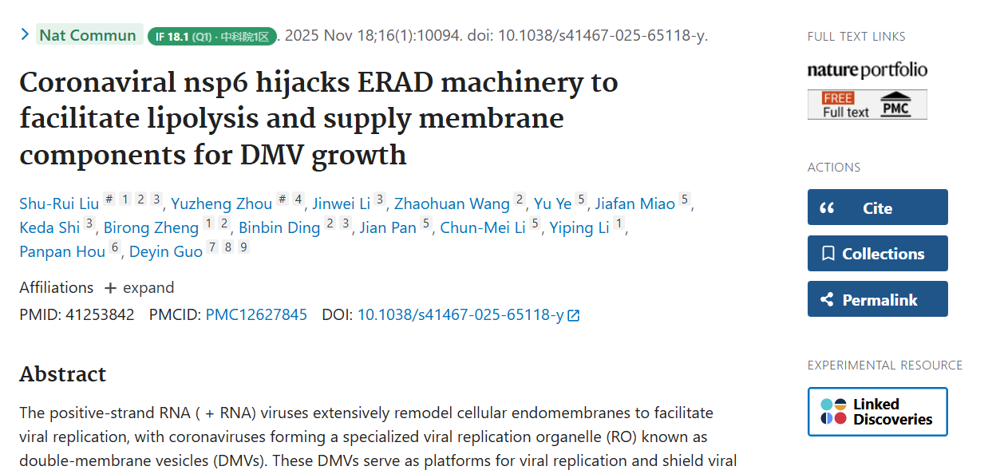
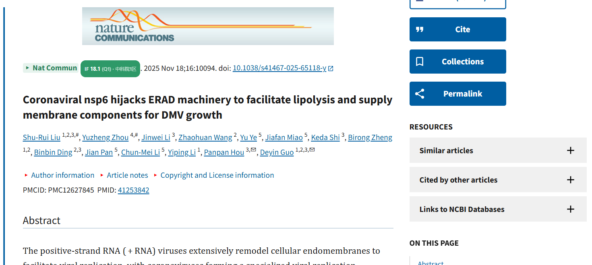

在 PubMed 搜索结果和文章详情页自动标注期刊影响因子（IF）和 JCR / 中科院分区。 ScholarScope 的免费替代，内置 13575 本期刊（JCR 2025 + 中科院分区表 2025）， 数据存在你自己电脑上，不联网采集、不上传任何浏览记录。

搜索结果页 · 筛选条 + IF 徽章
摘要页 · 刊名高亮 + 行内徽章
详情页 · 徽章与引文同行真实渲染：三层截图自动轮播，点击可手动切换。上方是搜索结果页（常驻筛选条 + IF 徽章 + 悬停详情卡）， 摘要页与详情页中刊名按 IF 等级高亮，IF 徽章紧跟刊名同行显示。
引用行的「期刊缩写. 年份」按 IF 等级上色加粗，后面跟 IF 与分区徽章，扫一眼就能筛掉低分文献。
结果列表上方常驻一条筛选条：按 IF 档位、JCR Q1–Q4、中科院 1–4 区、Top 组合过滤，只显示你要的文献，并实时告诉你「显示 X / Y 条」。
把当前筛选后看得到的条目导出成 CSV：期刊、年份、IF、JCR、中科院、Top、标题、PMID、链接。直接进 Excel 或 EndNote 前的清单。
鼠标停在徽章上，弹出该刊全称、缩写、IF、JCR 分区、中科院分区与数据版本，不用点开任何页面。
详情页引用行末尾追加同样的徽章，不用来回切页面查期刊。
弹窗里点一下就从仓库拉取最新数据并合并到本地，不用重新安装扩展。三个源自动回退，任一可用即可成功。
详情页遇到库里没有的期刊，会冒出一个小问号；点一下就把刊名带进反馈页，不用手打。IF 与分区由系统查表补。
弹窗右上角「设置」里可以关掉搜索页或详情页的标注、隐藏分区、改 IF 颜色阈值、切换紧凑样式。
点一下 IF 徽章，就把「期刊全称 IF 14.7 (Q1) 中科院1区」复制进剪贴板，写综述引文时直接粘。
只有你点更新或点版本号检查时才联网。期刊库与设置都存在 chrome.storage.local，不采集、不上传。
填一句话就行，点「生成反馈文本」会直接复制到剪贴板 —— 粘到 GitHub Issue 里，或者随手发给开发者都可以，不需要登录。期刊没标签的，只填刊名，IF 和分区系统自己查。
生成后点一下文本框即可全选复制；已帮你复制好的话直接粘贴就行。
D:\Tools\Pubmed-IF-Tag。解压后这个目录以后不要移动或删除，扩展直接从这个目录加载。edge://extensions/（Chrome 是 chrome://extensions/）。当前最新 v1.3.2。侧载安装的版本需要手动换包； 插件里点一下版本号也能查到有没有新版，有新版时那一行会直接给出下载入口。
edge://extensions/（Chrome 用 chrome://extensions/），点该扩展卡片上的刷新 ↻，再回 PubMed 按 Ctrl+F5。期刊数据是独立的：弹窗点一次「更新期刊数据」就从仓库拉最新库合并到本地，比换包方便。
只有插件本身的功能改动才需要换包。弹窗标题右侧点一下版本号，能查到有没有新版。
从 Edge 商店安装的插件会自动更新，不需要手动换包。但商店更新比本页下载慢，原因是：每次提交都要经过微软人工审核（通常 1–7 个工作日），审核通过后才会推送到用户端；本页 zip 是作者直接发布，上传即生效。
急着用新功能可以从本页下载 zip 侧载（开发者模式加载），期刊数据和设置与商店版完全互通，不会丢。
| v1.3.2 | 修复：摘要页徽章被插进期刊名高亮块内部，浅绿/浅紫背景把徽章一起包住，视觉上两个色块叠在一起。现在徽章移到高亮块之后作为兄弟节点，高亮只包期刊名本身。感谢 Dr. Xiang 反馈此问题。 |
|---|---|
| v1.3.1 | 修复：徽章悬停信息卡鼠标移走后不消失（v1.3.0 回归）。 筛选条升级：同一组内档位可多选叠加（如同时看 Q1+Q2），组间仍是交集；点选只改状态不重建按钮，消除「指上去闪一下、点下去顿一下」；芯片宽高固定，选中不再引起邻位位移。 每颗筛选按钮鼠标悬停弹出中文说明；筛选条右侧新增「?」帮助面板；计数行直接写出当前筛选条件摘要（如「≥10 / Q1+Q2 / 中科院1区+Top」），不再靠猜。 |
| v1.3.0 | 结果页新增常驻筛选条：按 IF 档位（≥20 / 10–20 / 5–10 / 3–5 / <3 / 未收录）、JCR Q1–Q4、中科院 1–4 区与 Top 组合过滤，只显示你要的条目，右侧实时显示「显示 X / Y 条」。 新增导出 CSV：只导出当前筛选后可见的条目，含期刊、年份、IF、JCR 分区、中科院分区、Top、标题、PMID 与链接，UTF-8 BOM 编码，Excel 直接打开不乱码。 新增徽章悬停信息卡：鼠标停在徽章上展开期刊全称、缩写、IF、JCR、中科院与数据版本，纯展示不挡点击。 筛选条会贴在 PubMed 顶部导航下沿常驻；翻页、换关键词后自动重建并保留你的筛选条件。 |
| v1.2.1 | 新增在线查期刊分区：输入期刊全称、PubMed 缩写或 ISSN，即可查影响因子、JCR 分区、中科院大类分区与 Top，全表也能下载成 CSV/JSON。 标签配色改为 3 分门槛：IF 低于 3 分（不含）统一归入「其他」，不再按旧阈值着绿。 期刊库修正 3 本可按刊名对上、但分区表 ISSN 字段缺失的刊（Computer Law & Security Review、Intelligent Systems in Accounting Finance & Management、Mutation Research），现 12988 条带中科院分区；新增 scripts/verify-journal-db.py，可把内置库与 JCR 2025 / 分区表 2025 逐条比对（已核为零差异）。性能：结果页与详情页的扫描改到浏览器空闲时段，并跳过插件自己插入的标签节点，不再「标注触发重扫」自己触发自己；期刊库查询改走前缀索引，查不到的刊不再逐条扫全表。 修复：点过「更新期刊数据」后再升级插件，旧快照会把新版内置库的 IF / 分区盖回旧值（现在旧快照只补内置库没有的刊）；网络卡住时拉取数据不再无限等待，9 秒超时后自动按备用源重试。 |
| v1.2.0 | 期刊库升级到 JCR 2025（2026-06-17 发布），并新增中科院分区表 2025：内置期刊从 3374 本扩到 13575 本，标签显示为「IF 13.6 (Q1) · 中科院1区」；设置页新增「显示中科院分区」开关，Top 期刊在悬停与复制文本里标出。 注意：库格式多了中科院字段，1.1.2 及更早版本点「更新期刊数据」会提示解析失败（本地数据不受影响，不会变少），下载本页安装包升级即可正常使用。 |
| v1.1.2 | PMC 搜索结果页（/search/）也显示 IF 标签：逐条读取结果列表里 citation-part 的刊名并查表，命中就把「刊名. 年份」高亮、行尾追加 IF/分区徽章；翻页与排序后由页面监听自动重新标注。 |
| v1.1.1 | 修复 PMC 全文页不显示标签：注入范围补上 pmc.ncbi.nlm.nih.gov（含旧路径 www.ncbi.nlm.nih.gov/pmc）；内容脚本新增 PMC 分支——从标题下方引文行里的刊名按钮取缩写查表，命中后高亮刊名并在其后追加 IF/分区徽章；PMC 页上「反馈未收录」的链接改为读页面 meta 里的 PMID。 |
| v1.1.0 | 弹窗版式重排：版本号移到标题右侧，点一下仍可检查新版本；主页入口并入首行 IF 图标；「恢复内置库」升为主位，悬停时在面板内展开作用说明；「反馈与建议」压暗、「打开 GitHub」换成图标，收在下一行右侧；页脚「仅自用」改为版权声明。版本提示文案简化为「新版本 vX.Y.Z」，点一下直接下载安装包。 |
| v1.0.11 | 检查更新改读主页的 version.json，避开 GitHub API 的匿名限流（每小时 60 次，撞上就报「无法检查」）；页脚版本号与「主页」之间补上分隔符，不再黏成「v1.0.10主页」。 |
| v1.0.10 | 弹窗里的「有新版本」改成点一下直接下载新包；下载后原位给出步骤说明入口。Chrome 用户即使 Edge 已上架，也走这条路径更新。 |
| v1.0.9 | 反馈只需填刊名，IF 与分区由系统查 JCR 表自动补；主页反馈合成一个三标签页；新增二级设置页；版本检查改为手动点版本号。 |
| v1.0.8 | 弹窗精简：去掉功能清单与重复统计行，链接分主次两层，更新按钮改名「更新期刊数据」，版本号改为动态读取。 |
| v1.0.7 | 远程更新时校验库条数，挡住 CDN 返回旧缓存导致的「更新后反而变少」。 |
这一节就是完整的隐私说明，商店审核与用户核对都以它为准。
| storage | 保存更新后的期刊库、你的显示设置与更新记录，仅本机可见，卸载即清除。 |
|---|---|
| api.github.com | 点「更新期刊数据」或点版本号检查更新时，读取仓库里的期刊数据文件或版本号。 |
| cdn.jsdelivr.net | 同上，作为备用数据源（GitHub 直连不稳定时使用）。 |
| raw.githubusercontent.com | 同上，第三个备用源。 |
| pubmed.ncbi.nlm.nih.gov | 只在 PubMed 页面上读取页面里的期刊名与年份，用于匹配标签；在你点「导出 CSV」时由本地生成文件，不上传。 |
先确认「加载解压缩的扩展」选中的目录里有 manifest.json，且扩展开关是开启状态。然后回到 PubMed 按 Ctrl+F5。如果之前加载过旧目录，那个目录被移动或删除后扩展会失效，需要删掉旧条目、重新加载当前目录。
筛选条只出现在搜索结果页（有结果列表时），文章详情页和 PMC 页面不显示。往下滚动时它会贴在 PubMed 顶部导航的下沿常驻；如果结果被筛到 0 条，筛选条仍然在，点「全部」即可还原。
导出的范围是当前筛选后可见的条目，这是刻意设计的：先把不想要的筛掉，再导出就是干净的清单。想要全部就点「全部」再导出。
说明库里还没收录，或者 PubMed 显示的缩写与库里写法不一致。在上面反馈区只填刊名就行 —— IF 和分区由系统从内置库自动查，补录后你在弹窗点一次「更新期刊数据」就能拿到。
更新需要访问 GitHub。如果网络受限，可以改用「打开 GitHub（手动更新）」到仓库页面自行查看 data/journal-if.js，或在本页重新下载最新 zip 覆盖解压目录，再到扩展页点刷新。任何情况下都不会影响已有标签显示。
内置数据来自 Clarivate JCR 2025（2026 年 6 月发布）与中国科学院文献情报中心《期刊分区表》2025 版。两套指标每年更新，正式投稿、评职称等场合请以官方数据为准，本扩展只用于快速筛选文献。
只操作 PubMed 页面里引用行的文本与徽章，不改动 PubMed 自身结构，一般可与 ScholarScope 等共存，但不建议同时开两个同类插件，以免重复标注。